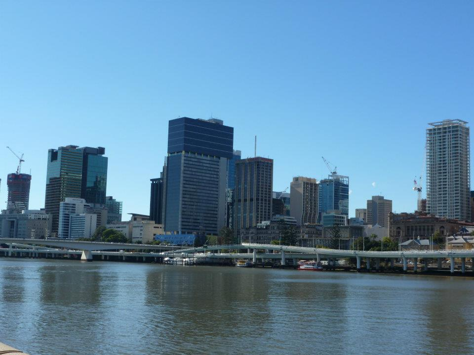

🇦🇺 AustraliaWestern AustraliaAround the World TripThe First Stop
Perth — where the Australian adventure began
We flew into Perth from Singapore as part of a huge around-the-world trip with friends — a couple of nights in the world's most geographically isolated major city, a private taxi driver for a personal city tour, and a gentle introduction to the vastness of Australia before the East Coast, Uluru and everything else that was to come.
Perth was where our Australian chapter began — flying in from Singapore, the first stop on Australian soil as part of a huge around the world trip with friends. A couple of nights in the most geographically isolated major city on earth was the gentle way to ease into Australia before the big-hitting adventures further east.
We hired a private taxi driver who gave us a personal city tour of Perth and its surrounds — a really lovely way to get oriented in a city that spreads out over such a wide area. Being driven around by someone who actually knew the city made it an easy, relaxed introduction.
Our impression was that Perth was pleasant, clean and sunny, although it felt a little quieter and less characterful to us than some of the places that came later. As a first Australian stop, though, it was an easy way to settle into the trip.
⭐ Things to Do in Perth
What Perth is known for
🌳
Kings Park
One of the largest inner-city parks in the world, with sweeping views over the Swan River and the Perth skyline.
🏖️
Cottesloe Beach
The famous Indian Ocean beach — pristine white sand and one of the best sunset spots in Western Australia.
🏛️
Fremantle
The historic port town just south of Perth — beautiful colonial architecture, markets and a distinct character.
🐨
Rottnest Island
A short ferry from Fremantle — home to the famously photogenic quokkas and gorgeous beaches.
🍷
Swan Valley
Western Australia's oldest wine region, an easy day trip from central Perth.
🏙️
Elizabeth Quay
The waterfront precinct in the city centre — bars, restaurants and the modern face of Perth.
💡 Practical Tips
Perth practical info
Getting there: Perth Airport is the arrival point for most long-haul flights from Asia and the Middle East — direct routes from Singapore, Dubai and Doha make it a natural first stop on an around the world trip.
Time zone: Perth runs on Australian Western Standard Time (AWST) — 8 hours ahead of Ireland during Irish winter.
Getting around: The city itself is walkable but a private driver, taxi or rideshare is easier for seeing the wider Perth area — especially the coast and Fremantle.
Best time to visit: September to November and March to May tend to have the most comfortable weather. Summer (December to February) can be very hot.
🎟 Book Perth Experiences
Book Perth experiences with GetYourGuide
Rottnest Island, Fremantle tours, Swan Valley wine tastings and more:
Disclosure: If you book through these links we may earn a small commission at no extra cost to you.
🚗 Explore Perth from Home
🚗 Drive From HomePerth · Australia
Take a virtual drive around Perth
Perth was where our Australian adventure began. Get a feel for Western Australia's capital with Drive From Home, then jump into the Perth virtual drive and explore the city from the road.
Perth is a pleasant, sunny, clean city and a natural first stop on an around the world trip from Asia. It felt a little devoid of character compared to what came further east — but as a soft landing into Australia it works nicely.
How long should you spend in Perth?
We stayed a couple of nights, which felt about right for us as a first stop. If you want to add Rottnest Island, Fremantle and Swan Valley you can happily stretch it to four or five days.
Is Perth a good stop on an around the world trip?
Yes — direct flights from Singapore and the Middle East make Perth a very natural first Australian stop. It gives you a chance to recover from long-haul flights before the big-hitting Australian experiences.
What did we do in Perth?
We hired a private taxi driver who gave us a personal city tour of Perth and the surrounding area — a lovely, relaxed way to get oriented in a city that spreads out over a large area.
What to pack for Australia
Australia packing essentials
A few useful essentials for an Australia adventure — especially for sun, heat and long travel days.
Disclosure: These are Amazon affiliate links. If you buy through them we may earn a small commission at no extra cost to you.
Planning your Australia trip?
This is just one stop on the huge Australian adventure. See how it all connects — the East Coast, the Red Centre, the reef, the cities and everything in between.
Affiliate disclosure: if you book through our links we may earn a small commission at no cost to you. We only share links we think may be useful when planning your trip.
🇦🇺 BrisbaneQueenslandOur Australia travels
Brisbane & Daydream Island — from river city to tropical Queensland
Our Queensland travels gave us two completely different sides of Australia: Brisbane, built around its river and subtropical city life, and Daydream Island in the Whitsundays — beaches, wildlife and proper tropical-island scenery.
BrisbaneQueenslandSouth BankBrisbane River
📸 Our Brisbane
A glimpse from our trip
One from our own Australia archive — Brisbane's skyline across the water.

🌴 South Bank & the River
The river shapes the city
Brisbane's river is one of the things that gives the city its identity. South Bank is the obvious place to slow down, walk the riverside and enjoy the subtropical feel of Queensland without having to leave the centre.
🌊 Brisbane River
The river winds through the heart of the city and makes riverside walking and ferries part of the Brisbane experience.
🌴 South Bank
Parklands, restaurants and cultural attractions sit directly across the river from the CBD.
🏙️ Exploring Brisbane
A city that works well at an easy pace
Brisbane doesn't need to be attacked with a massive checklist. The centre, riverfront and South Bank can be combined comfortably, with the City Botanic Gardens adding another green space close to the CBD.
It also works naturally as a gateway to more of south-east Queensland, which is why it fits so well into a wider Australian itinerary rather than feeling like an isolated city break.
🌴 Daydream Island & the Whitsundays
🏝️ Daydream IslandWhitsundaysOur Queensland trip
A completely different side of Queensland
After the city, Daydream Island gave us the tropical Australia we'd imagined — island views, beaches, wildlife and the blue water of the Whitsundays. These are all from our own trip.
One trip, two very different Queensland memories: Brisbane gave us the city; Daydream Island gave us the tropical escape.
Browse current Brisbane activities and day trips below. These are planning ideas and don't imply that we personally took the exact experiences displayed.
🇦🇺 AustraliaWestern AustraliaAround the World TripThe First Stop
Perth — where the Australian adventure began
We flew into Perth from Singapore as part of a huge around-the-world trip with friends — a couple of nights in the world's most geographically isolated major city, a private taxi driver for a personal city tour, and a gentle introduction to the vastness of Australia before the East Coast, Uluru and everything else that was to come.
Perth was where our Australian chapter began — flying in from Singapore, the first stop on Australian soil as part of a huge around the world trip with friends. A couple of nights in the most geographically isolated major city on earth was the gentle way to ease into Australia before the big-hitting adventures further east.
We hired a private taxi driver who gave us a personal city tour of Perth and its surrounds — a really lovely way to get oriented in a city that spreads out over such a wide area. Being driven around by someone who actually knew the city made it an easy, relaxed introduction.
Our impression was that Perth was pleasant, clean and sunny, although it felt a little quieter and less characterful to us than some of the places that came later. As a first Australian stop, though, it was an easy way to settle into the trip.
⭐ Things to Do in Perth
What Perth is known for
🌳
Kings Park
One of the largest inner-city parks in the world, with sweeping views over the Swan River and the Perth skyline.
🏖️
Cottesloe Beach
The famous Indian Ocean beach — pristine white sand and one of the best sunset spots in Western Australia.
🏛️
Fremantle
The historic port town just south of Perth — beautiful colonial architecture, markets and a distinct character.
🐨
Rottnest Island
A short ferry from Fremantle — home to the famously photogenic quokkas and gorgeous beaches.
🍷
Swan Valley
Western Australia's oldest wine region, an easy day trip from central Perth.
🏙️
Elizabeth Quay
The waterfront precinct in the city centre — bars, restaurants and the modern face of Perth.
💡 Practical Tips
Perth practical info
Getting there: Perth Airport is the arrival point for most long-haul flights from Asia and the Middle East — direct routes from Singapore, Dubai and Doha make it a natural first stop on an around the world trip.
Time zone: Perth runs on Australian Western Standard Time (AWST) — 8 hours ahead of Ireland during Irish winter.
Getting around: The city itself is walkable but a private driver, taxi or rideshare is easier for seeing the wider Perth area — especially the coast and Fremantle.
Best time to visit: September to November and March to May tend to have the most comfortable weather. Summer (December to February) can be very hot.
🎟 Book Perth Experiences
Book Perth experiences with GetYourGuide
Rottnest Island, Fremantle tours, Swan Valley wine tastings and more:
Disclosure: If you book through these links we may earn a small commission at no extra cost to you.
🚗 Explore Perth from Home
🚗 Drive From HomePerth · Australia
Take a virtual drive around Perth
Perth was where our Australian adventure began. Get a feel for Western Australia's capital with Drive From Home, then jump into the Perth virtual drive and explore the city from the road.
Perth is a pleasant, sunny, clean city and a natural first stop on an around the world trip from Asia. It felt a little devoid of character compared to what came further east — but as a soft landing into Australia it works nicely.
How long should you spend in Perth?
We stayed a couple of nights, which felt about right for us as a first stop. If you want to add Rottnest Island, Fremantle and Swan Valley you can happily stretch it to four or five days.
Is Perth a good stop on an around the world trip?
Yes — direct flights from Singapore and the Middle East make Perth a very natural first Australian stop. It gives you a chance to recover from long-haul flights before the big-hitting Australian experiences.
What did we do in Perth?
We hired a private taxi driver who gave us a personal city tour of Perth and the surrounding area — a lovely, relaxed way to get oriented in a city that spreads out over a large area.
What to pack for Australia
Australia packing essentials
A few useful essentials for an Australia adventure — especially for sun, heat and long travel days.
Disclosure: These are Amazon affiliate links. If you buy through them we may earn a small commission at no extra cost to you.
Planning your Australia trip?
This is just one stop on the huge Australian adventure. See how it all connects — the East Coast, the Red Centre, the reef, the cities and everything in between.
Affiliate disclosure: if you book through our links we may earn a small commission at no cost to you. We only share links we think may be useful when planning your trip.